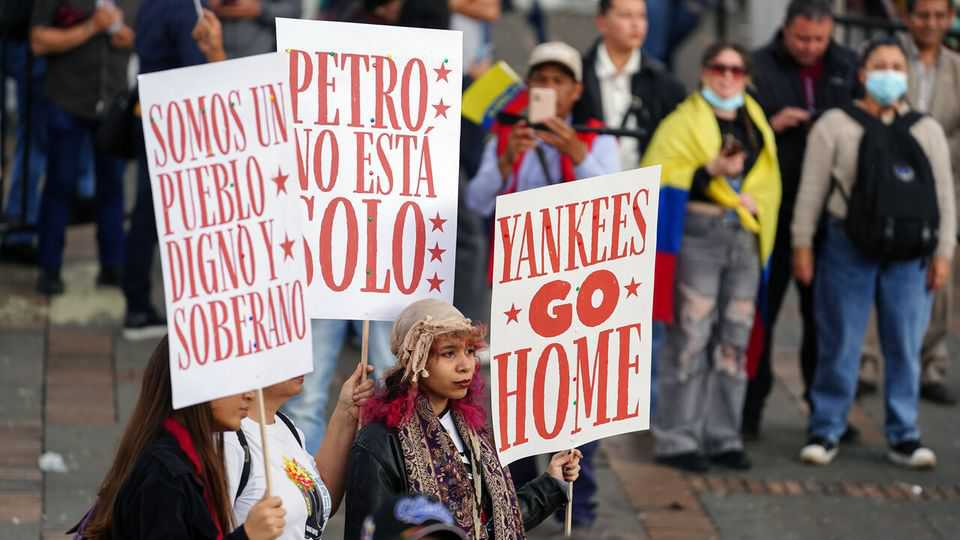
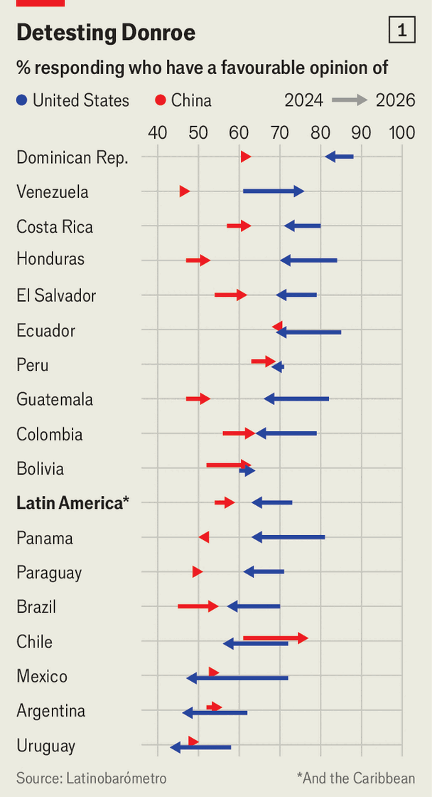
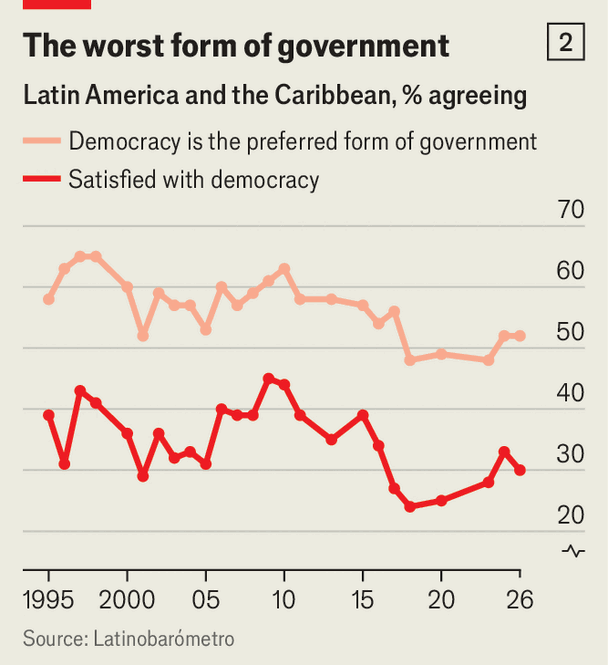
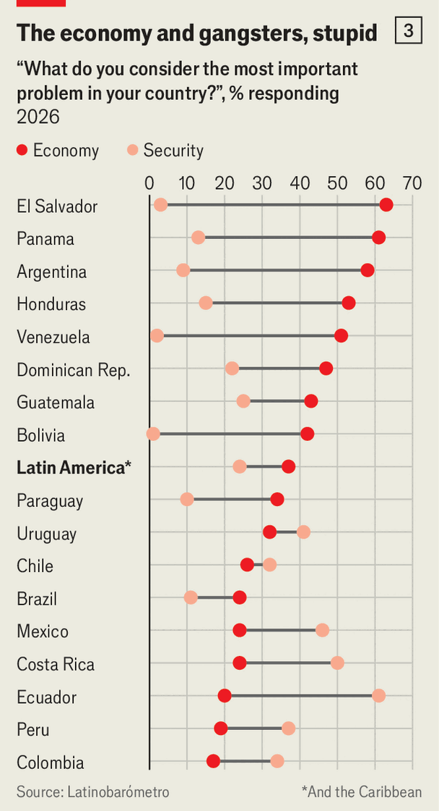

For the first time Latin Americans prefer China to America
Donald Trump’s interventions are unpopular, but tough talk on security resonates

Oct 1st 2026
In the 20 months since Donald Trump returned to the White House, right-wing candidates have won all seven presidential elections in Latin America. Many of them ran as Trump copycats, raging against the media and “cultural Marxism”. And so the latest Latinobarómetro poll, taken in 17 countries and published exclusively by The Economist, is intriguing: Latin American’s views of the United States have soured since Mr Trump came back. The share with a favourable opinion fell from 73% in 2024 to 63% (see chart 1).

The United States is still better liked than China. But for the first time, in a historically pro-American region, Latin Americans see China’s influence in a better light than America’s: 65% call it positive, against 57% for the United States. This reflects Mr Trump’s aggressive stance towards a region he believes his country should dominate. While 69% approve of the capture of Nicolás Maduro, Venezuela’s former dictator, organised by Mr Trump in January, only 35% think American intervention will benefit Venezuela. Almost two-thirds disapprove of the way he is conducting international relations (although 61% of Venezuelan respondents approve).
The concurrent election of Trumpian right-wingers may be partly explained by another of the poll’s findings: Nayib Bukele, El Salvador’s strongman president, remains the region’s most admired figure. Mr Bukele reduced El Salvador’s murder rate dramatically by locking large numbers of young men in prison without a trial, grabbing control of democratic institutions in the process. Many in Latin America want a similar elimination of crime and insecurity. The Trumpian candidates, such as Abelardo de la Espriella, now president of Colombia, promise to bring it about.

Despite the popularity of the authoritarian Mr Bukele, half of respondents continue to believe in democracy. After taking a dive in the mid-2010s, as economic stagnation set in following a commodity boom, support for democracy and its institutions has stabilised, albeit at a lower level (see chart 2). “A third [of respondents] say that democratic institutions are not important, but it’s always been like that,” says Marta Lagos, Latinbarómetro’s director. Despite a pandemic and low growth “support for democracy continues.”
Dissatisfaction with the way democracy works in practice remains widespread. Parliaments are particularly abhorred; only 22% feel represented by them. But 55% now say democracy can’t work without political parties, up from 44% in 2023. Only 15% think their country’s economic situation is good; just 28% are satisfied with public hospitals and 30% with the police.
That dissatisfaction has led to electoral defeat for many incumbent governments, recently mainly those of the left. Importantly, Latin Americans still believe in the power of elections to effect change. Presidential contests this year coincided with increased support for democracy in Colombia, Honduras and Peru, where right-wingers won, but not in Bolivia, where the new centre-right president, Rodrigo Paz, has struggled with economic problems.

Although the economy is still the main public concern, security tops it in seven countries and notably in Ecuador (see chart 3). The new, more radical right also taps into Latin America’s social conservatism. Two-thirds of respondents oppose gay marriage; the same share opposes making abortion legal. But the region’s south is different; majorities in Argentina, Chile and Uruguay are in favour of both.
It may also help the right that Latin Americans don’t expect much from the state. Asked how much the state has done for them in the previous three years, 73% said “little or nothing”, up from 63% in 2011. That high level reflects the weight of the informal economy in the region. Only 28% say they pay social-security contributions.
As elsewhere, social media have displaced television, radio and especially newspapers as the main source of information about politics. Yet it is hard to trace a direct relationship between that change and the rise of more extreme politics. More than 70% think social media don’t portray well “what most people think”.
Despite problems, Latin Americans are not all that pessimistic. A quarter say they have thought of emigrating, down from 30% in 2023 (some may be responding to Mr Trump’s immigration crackdown). Only 36% think their country’s economic situation will improve over coming year, but 52% think their own situation will get better, the highest share since the series started in 1995. Home and family remain the bedrocks of Latin American life. ■